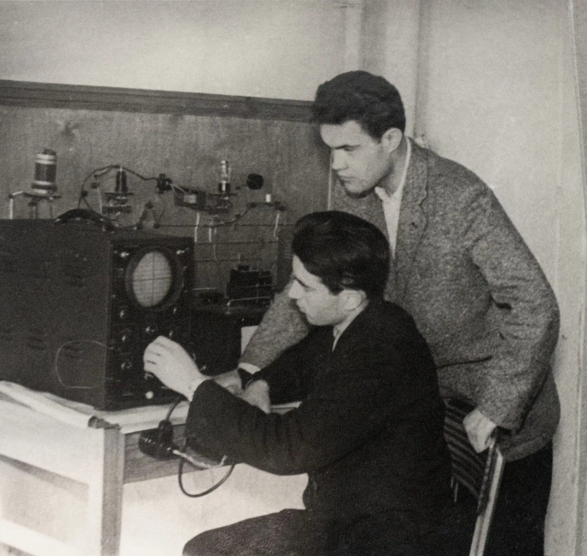

Фотоархів (1900-2015)
1900-1930 роки
Перший випуск Чернігівського Учительського інституту 1916-1919 р.

Випуск 1929 р.

Випуск 1930 р.
1930-1940 роки

Випуск Чернігівського учительського інституту 1936-1938 рр.

3 курс фм 1937 рік
Техмат. 1931 рік
1940-1950 роки

Випуск 1948 року
1950-1960 роки

Кролевець В.С. зі своєю сім'єю



Випуск 1958 року

Випуск 1950 року

Випуск 1952 року

Випуск 1954 року
1960-1970 роки

Лабораторія фізики


Випуск 1961 року

1964 рік
Студенти заочники 1960 р.


Випуск 1960 р.. Зістріч після 25 років
1970-1980 роки

Міжнародний Комітет космічних досліджень


1980-1990 роки


Фізмат, випуск 1986р., 51 група
1990-2000 роки


2000 роки


КВН
Без року


 copy.webp)
 copy.webp)
 copy.webp)
 copy.webp)
 copy.webp)
 copy.webp)
 copy.webp)
 copy.webp)
 copy.webp)
 copy 2.webp)
 copy.webp)
 copy.webp)
 copy.webp)